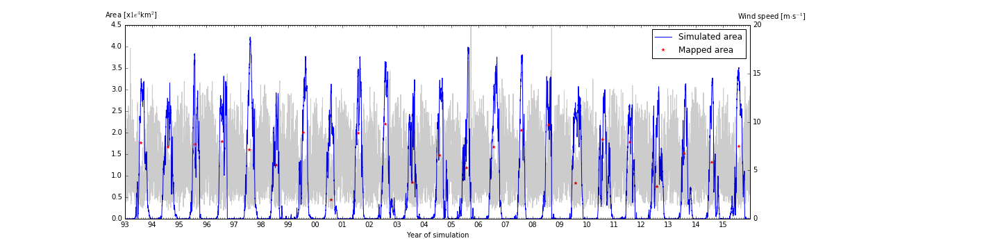
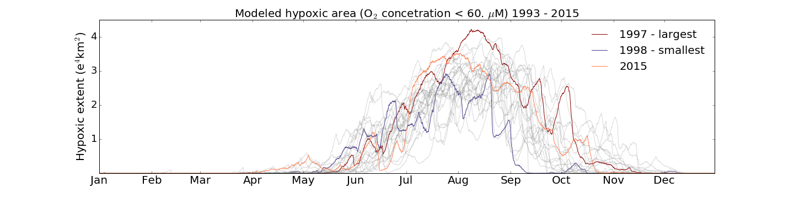
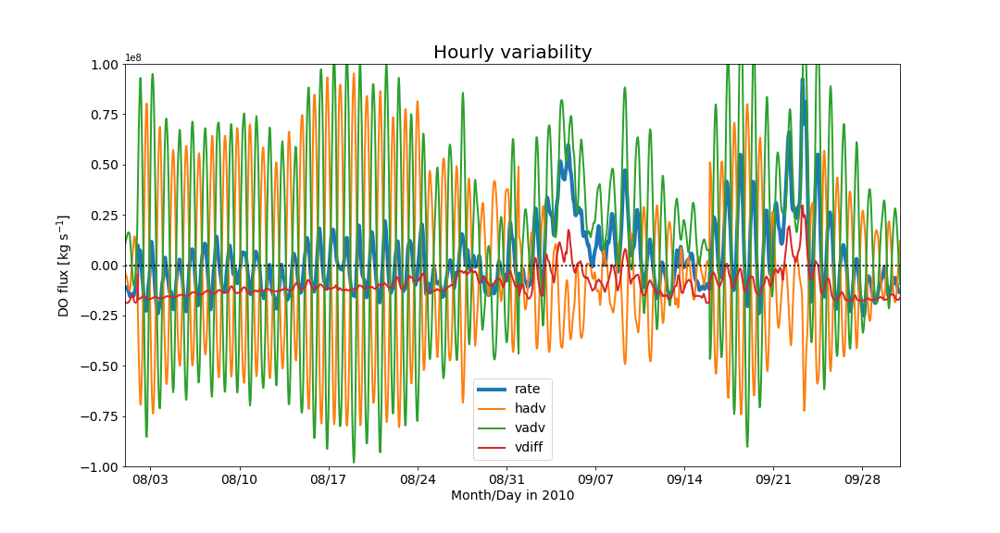

Researh
Research
Oceanographer and benthos ecologist, now working in a PhD in physical oceanography using ROMS to study bottom hypoxia and its effects on benthic fauna.
Interest include: Coastal modeling, ROMS, coastal and shelf ecology, python tools for oceanography.
Graduate student under Rob Hetland at Texas A&M in the Department of Oceanography.
Hypoxic extent
  Models allow a more dynamic overview of the development of the hypoxic region in the Texas-Louisiana Shelf. While annual cruise observations capture a static vision of what is expected to be the largest seasonal extent each year (late July or early August), models allow to see the development of the region. Although model estimations are not completely accurate, they still give an estimation driven by a realistic hydrodynamic settings. 20 years of model output capture a wide range of interannual variability.
Oxygen budget
 A budget analysis reveals different rates of contribution of the horizontal and vertical advective fluxes, and the vertical diffusive flux in the movement and formation of bottom water hypoxia. Relative contributions of these fluxes to the balance change at different spatial scales. While horizontal advective fluxes are responsible for the high-frequency variability seen in the oscillation of oxygen-depleted water masses, vertical diffusive fluxes, and bottom respiration dominate over longer spatial and temporal scales. Understanding the mechanisms of the different scales of variability simulated in the model can aid in improving observation strategies to evaluate the seasonal extent of hypoxia on the Texas-Louisiana shelf more accurately, as well as evaluate the ecological implications on regions subject to different oscillatory modes. .